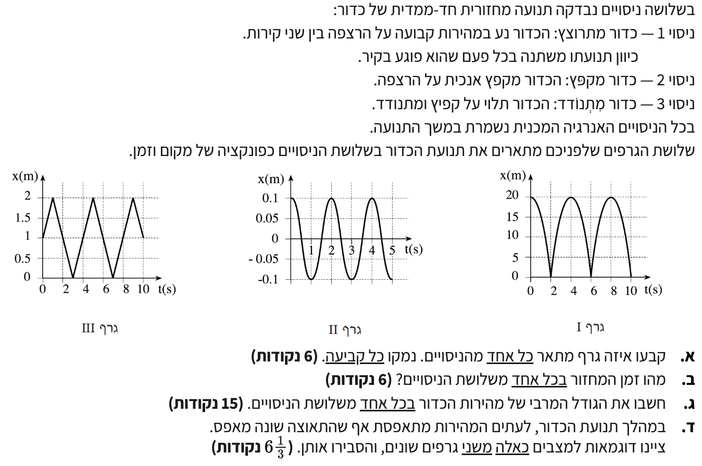

פתרון בגרות פיזיקה - מכניקה 2003 שאלה 4
מכניקה | 2003 | שאלה 4
פתרון מודרך, מפורט ומוסבר צעד-אחר-צעד

סעיף א' - זיהוי הגרפים
נתונים לנו שלושה ניסויים שונים של תנועה מחזורית חד-ממדית ושלושה גרפים המתארים מקום כפונקציה של הזמן \( x(t) \). חשוב לשים לב שצירי הזמן (שניות) והמקום (מטרים) בכל הגרפים נתונים ביחידות תקניות (MKS), ולכן אין צורך בהמרת יחידות.
- ניסוי 1: כדור נע במהירות קבועה בין שני קירות (משנה כיוון בפגיעה).
- ניסוי 2: כדור נופל ונזרק מעלה, מקפץ אנכית על הרצפה.
- ניסוי 3: כדור תלוי על קפיץ ומבצע תנודות.
עלינו להתאים כל אחד משלושת הגרפים (I, II, III) לאחד משלושת הניסויים ולנמק את קביעתנו על בסיס צורת הפונקציה הקינמטית.
\( x = x_0 + v_0 t \) \( x = x_0 + v_0 t + \frac{1}{2}at^2 \) \( x(t) = A\cos(\omega t + \varphi) \)
העיקרון המנחה הוא שצורת הגרף נגזרת מסוג הכוח הפועל על הגוף (כוח אפס, כוח כבידה קבוע, כוח מחזיר משתנה).
הצבה ופתרון:
ננתח כל ניסוי בנפרד ונמצא את הגרף המתאים לו:
ניסוי 1 - כדור מתרוצץ בין קירות:
הכדור נע במהירות שגודלה קבוע. לכן, משוואת המקום-זמן היא פונקציה ליניארית מהצורה \( x(t) = x_0 \pm vt \). הגרף של פונקציה ליניארית הוא קו ישר. מכיוון שהכדור פוגע בקירות ומשנה את כיוון תנועתו בפתאומיות, נצפה לראות גרף המורכב מקווים ישרים עם שיפוע חיובי ושלילי לסירוגין. זהו גרף III.
ניסוי 2 - כדור מקפץ:
בין קפיצה לקפיצה, הכדור נמצא בהשפעת כוח הכבידה בלבד ולכן הוא בנפילה חופשית עם תאוצה קבועה כלפי מטה. משוואת המקום-זמן היא פונקציה ריבועית (פרבולה) מהצורה \( x(t) = x_0 + v_0 t - \frac{1}{2}gt^2 \). הפרבולות הפוכות (בוכות) כי התאוצה שלילית ביחס לציר שכיוונו מעלה. זהו גרף I.
ניסוי 3 - כדור על קפיץ:
כדור על קפיץ מבצע תנועה הרמונית פשוטה. הכוח הפועל עליו הוא כוח מחזיר הפרופורציוני להעתק. משוואת המקום-זמן היא פונקציה טריגונומטרית (סינוס או קוסינוס) מהצורה \( x(t) = A\cos(\omega t + \varphi) \). התנועה היא חלקה וללא זוויות חדות. זהו גרף II.
ניסוי 1 מיוצג על ידי גרף III.
ניסוי 2 מיוצג על ידי גרף I.
ניסוי 3 מיוצג על ידי גרף II.
סעיף ב' - זמן המחזור
נתונים הגרפים המותאמים לכל ניסוי מהסעיף הקודם. הציר האופקי בכל הגרפים מייצג את הזמן במחזורי תנועה בשניות (\( s \)).
עלינו למצוא את זמן המחזור \( T \) (הזמן שלוקח לגוף להשלים מחזור תנועה שלם אחד ולחזור לאותו מצב תנועה) עבור כל אחד משלושת הניסויים.
\( \Delta t = t_2 - t_1 \)
העיקרון: מחזור שלם הוא המרחק על ציר הזמן בין שתי נקודות זהות עוקבות בגרף (למשל, משיא לשיא הבא, או מנקודת מינימום לנקודת מינימום הבאה).
הצבה ופתרון:
נקרא את הנתונים ישירות מתוך הגרפים:
- ניסוי 1 (גרף III): הכדור מתחיל את תנועתו ב- \( x = 1\text{ m} \) ב- \( t = 0\text{ s} \), מגיע לקיר העליון ב- \( t=1\text{ s} \) (שיא, \( x=2\text{ m} \)), יורד לקיר התחתון ומגיע אליו ב- \( t=3\text{ s} \) (מינימום, \( x=0\text{ m} \)), וחוזר שוב לקיר העליון ב- \( t=5\text{ s} \). מחזור שלם (משיא לשיא) מתרחש בין \( t=1\text{ s} \) ל- \( t=5\text{ s} \). לכן: \( T_1 = 5 - 1 = 4\text{ s} \)
- ניסוי 2 (גרף I): הכדור משוחרר ממנוחה בגובה \( x = 20\text{ m} \) ב- \( t = 0\text{ s} \) (שיא). הוא פוגע ברצפה וחוזר חזרה לשיא הגובה ב- \( t = 4\text{ s} \). המרחק בין שני שיאים עוקבים הוא: \( T_2 = 4 - 0 = 4\text{ s} \)
- ניסוי 3 (גרף II): הכדור נמצא בשיא הגובה העליון שלו \( x = 0.1\text{ m} \) ב- \( t = 0\text{ s} \). השיא העוקב הבא מתרחש ב- \( t = 2\text{ s} \). המרחק בין שיאים הוא: \( T_3 = 2 - 0 = 2\text{ s} \)
זמן המחזור בניסוי 1: \( T_1 = 4\text{ s} \)
זמן המחזור בניסוי 2: \( T_2 = 4\text{ s} \)
זמן המחזור בניסוי 3: \( T_3 = 2\text{ s} \)
סעיף ג' - חישוב המהירות המרבית
לכל ניסוי נתון זמן המחזור \( T \) שחישבנו בסעיף הקודם. כמו כן, ניתן לקרוא מהגרפים את המיקומים הרלוונטיים (משרעת, גובה מרבי, מרחק בין קירות). אין צורך להמיר יחידות.
עלינו לחשב את הגודל המרבי של מהירות הכדור (את הערך המוחלט של המהירות, ב- \( \text{m/s} \)) עבור כל אחד משלושת הניסויים במהלך תנועתו.
\( v = \frac{\Delta x}{\Delta t} \) \( v^2 = v_0^2 + 2a(x - x_0) \) \( v_{max} = \omega A \) \( \omega = \frac{2\pi}{T} \)
העיקרון: לכל מודל פיזיקלי מתאימה משוואה אחרת למציאת המהירות המרבית. תנועה קצובה (ניסוי 1), נפילה חופשית (ניסוי 2) ותנועה הרמונית (ניסוי 3).
הצבה ופתרון:
ננתח כל מערכת באמצעות המודל המתאים לה:
ניסוי 1 (גרף III) - תנועה במהירות קבועה:
גודל המהירות קבוע לאורך כל התנועה. נחשב את שיפוע הגרף (ערך מוחלט) על פני קטע אחד, למשל מירידה מהשיא העליון אל התחתון. הכדור עובר מ- \( x_1 = 2\text{ m} \) בזמן \( t_1 = 1\text{ s} \), אל \( x_2 = 0\text{ m} \) בזמן \( t_2 = 3\text{ s} \).
ניסוי 2 (גרף I) - נפילה חופשית:
הכדור מאיץ מטה בהשפעת הכבידה. גודל המהירות יהיה מקסימלי בדיוק לפני הפגיעה ברצפה (\( x = 0\text{ m} \)). נבחר ציר המכוון מעלה, לכן תאוצת הגוף היא \( a = -g = -10\text{ m/s}^2 \). בשיא הגובה ( \( x_0 = 20\text{ m} \) ), המהירות ההתחלתית היא אפס (\( v_0 = 0 \)). נשתמש במשוואת קינמטיקה ללא זמן (ניתן גם להשתמש בשימור אנרגיה: \( mgh = \frac{1}{2}mv^2 \)):
ניסוי 3 (גרף II) - תנועה הרמונית פשוטה:
בתנועה הרמונית, המהירות המרבית מתקבלת בנקודת שיווי המשקל המכני (\( x = 0 \)). המשרעת (אמפליטודה) הנקראת מהגרף היא \( A = 0.1\text{ m} \). זמן המחזור הוא \( T = 2\text{ s} \). נחשב תחילה את התדירות הזוויתית \( \omega \) ולאחר מכן את המהירות המרבית.
המהירות המרבית בניסוי 1: \( v_1 = 1\text{ m/s} \)
המהירות המרבית בניסוי 2: \( v_2 = 20\text{ m/s} \)
המהירות המרבית בניסוי 3: \( v_3 = 0.314\text{ m/s} \)
סעיף ד' - מהירות אפס עם תאוצה שונה מאפס
יש לנו הבנה מלאה של הכוחות הפועלים בכל אחד משלושת המודלים. בניסוי 2 (נפילה חופשית) פועל כוח כבידה קבוע \( mg \). בניסוי 3 (קפיץ) פועל כוח מחזיר הפרופורציוני להעתק \( -kx \).
עלינו להביא שתי דוגמאות מתוך הניסויים המוצגים למצבים שבהם מהירות הכדור מתאפסת (רגעית) אך התאוצה שלו שונה מאפס, ולהסביר מדוע התאוצה לא מתאפסת.
\( \Sigma F = m a \) \( F_g = mg \) \( a = -\omega^2 x \)
העיקרון: החוק השני של ניוטון קובע כי התאוצה תלויה אך ורק בשקול הכוחות הפועל על הגוף ברגע נתון. המהירות היא נתון מצב בלבד ואינה קובעת את התאוצה באותו רגע.
הצבה ופתרון:
דוגמה 1: שיא הגובה בנפילה (ניסוי 2)
![]()
דוגמה 2: קצה התנודה בקפיץ (ניסוי 3)
![]()
להלן שתי דוגמאות ממערכות שונות:
- ניסוי 2 (הכדור המקפץ): כאשר הכדור מגיע לשיא הגובה (בזמנים \( t=0, t=4, t=8 \) בגרף I), הוא נעצר רגעית לפני שהוא מחליף כיוון ומתחיל ליפול. לכן מהירותו באותו רגע היא אפס. עם זאת, כוח הכבידה של כדור הארץ (\( mg \)) ממשיך לפעול עליו כלפי מטה ללא הפסקה. לפי החוק השני של ניוטון, כיוון שיש כוח שקול שאינו אפס, ישנה תאוצה שאינה מתאפסת (תאוצת הכובד \( g \) כלפי מטה).
- ניסוי 3 (הכדור על קפיץ): כאשר הכדור מגיע לקצות המסלול שלו (בנקודות המקסימום והמינימום של המשרעת, למשל ב- \( t=0, t=1, t=2 \) בגרף II), מהירותו מתאפסת רגעית בעת החלפת כיוון התנועה. בנקודות אלו ההעתק ממצב שיווי המשקל הוא המקסימלי (\( x = \pm A \)), ולכן הכוח שמפעיל הקפיץ (\( F = -kx \)) הוא בערכו המרבי. מאחר והכוח השקול שונה מאפס (ואף מקסימלי), התאוצה שונה מאפס. ניתן גם לראות זאת קולית מהנוסחה לתאוצה בתנועה הרמונית: \( a = -\omega^2 x \). אם \( x \neq 0 \) אז התאוצה \( a \neq 0 \).